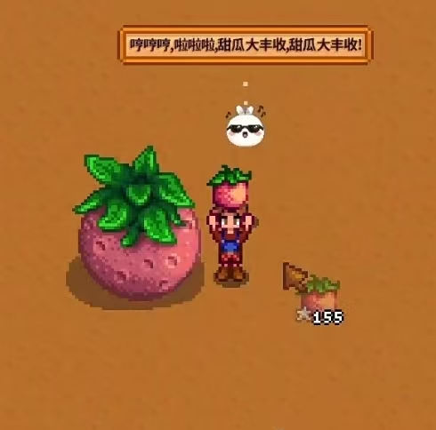
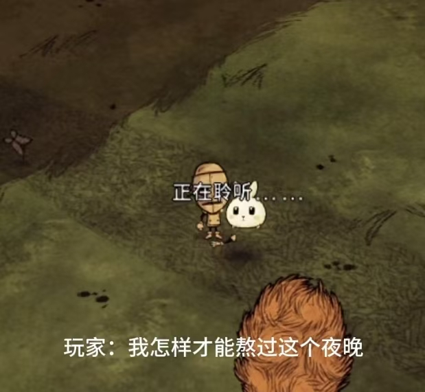
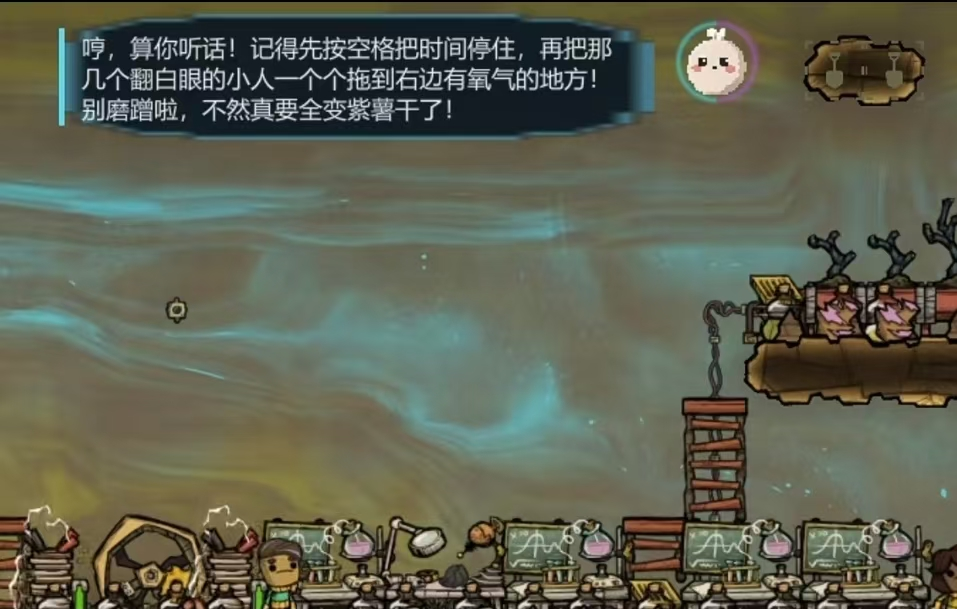
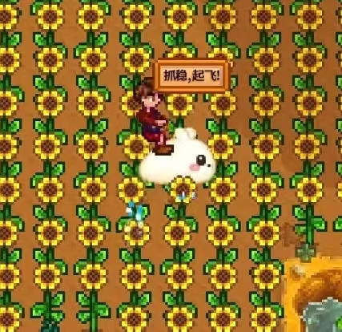
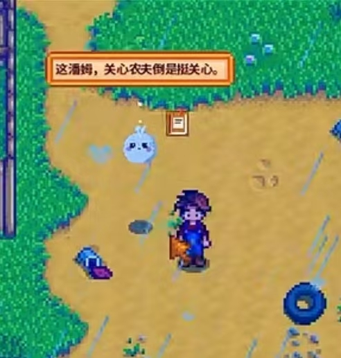

看懂此刻的局面
位置、背包、任务、附近角色和场景变化，都可以通过游戏适配器准确告诉 AI。
OPEN SOURCE · BUILT ON DEEPSEEK HARNESS
它不只在聊天窗口里回答问题，还能看懂当前局面、参与游戏行动、记住共同经历，并根据玩家的选择动态续写故事。
你们在回家的路上听见树林深处传来异响。小汤圆停下脚步，等待你的决定。
FOR PLAYERS
AI 的回答、行动与成长都建立在真实游戏状态上。它知道发生了什么，也必须接受游戏规则的约束。
位置、背包、任务、附近角色和场景变化，都可以通过游戏适配器准确告诉 AI。
玩家提出目标，AI 调用游戏开放的动作。是否成功由游戏确认，不靠一句话假装完成。
记忆按游戏和存档隔离。重新回到同一个世界，AI 可以接着之前的故事继续陪伴。
剧情结合世界观、玩家选择和当前事实滚动生成，不再只是播放一条预先写死的任务线。
A STORY GROUNDED IN THE GAME
AI 可以提出新的剧情目标，但不能自己宣布目标完成。只有游戏返回的真实状态，才能推动剧情继续向前。
了解完整产品理念 →结合世界观与玩家选择生成下一段目标。
所有动作都通过游戏明确开放的能力执行。
Adapter 返回状态证据，剧情才会进入下一段。
ALREADY INSIDE THE GAME
从农场里的日常陪伴，到荒野中的生存建议，再到殖民地的操作分析，同一套 AI 游戏底座可以通过不同 Adapter 进入不同游戏。

查看原图 ↗AI 能围绕农场里真正发生的事情回应，形成属于这个存档的共同经历。
场景感知 · 角色表达 · 长期陪伴
查看原图 ↗玩家可以直接询问生存问题，AI 结合当前世界与角色状态继续交流。

查看原图 ↗AI 读取殖民地状态，把复杂问题拆成玩家可以执行的步骤，而不是脱离游戏现场泛泛回答。

查看原图 ↗角色表达、游戏事件和可执行能力组合起来，让 AI 伙伴真正成为玩法的一部分。

查看原图 ↗天气、地点和附近事件都能成为交流上下文，让陪伴更像发生在游戏世界里。
以上画面来自项目开发验证版本。相关游戏名称及画面版权归各自权利人所有，本项目并非游戏官方合作项目。
FOR GAME CREATORS
开发者专注于自己的世界、角色和玩法。模型、Agent、会话、记忆、工具与桌面界面由统一底座复用。
提供角色、世界观、玩法边界与资源清单。
告诉系统如何观察状态、执行动作和接收事件。
复用对话、动态剧情、自学习和可视化分析。
模型 · Agent · Session · Tool
观察 · 动作 · 事件 · 错误
CURRENT PROGRESS
项目已经开放源码和开发者演示。面向普通玩家的一键安装包、真实游戏长期体验与更多 Adapter 仍在持续开发。
核心接口、Adapter Protocol、Game Pack 与 Mock Game 自动测试。
剧情由同一 Agent 会话生成，技能需要真实试跑成功后才能保存。
继续完善星露谷物语、饥荒联机版和缺氧接入及普通玩家安装体验。
OPEN SOURCE
如果你是玩家、游戏开发者或 MOD 作者，欢迎查看项目、提出想法，或者为自己的游戏实现第一个 Adapter。